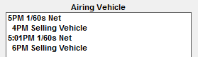
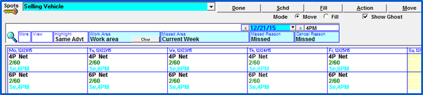
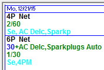
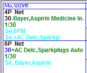
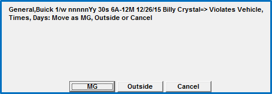
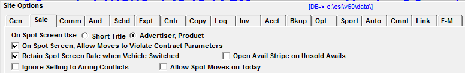
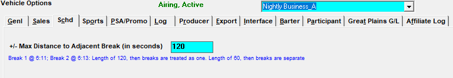
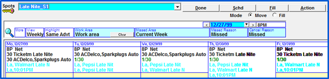
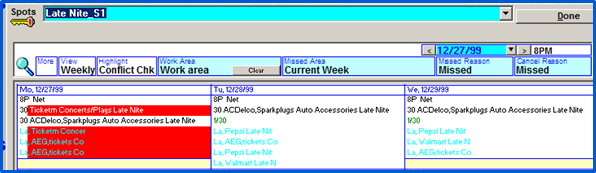

Avail Conflict Check
Multiple selling avails can link to a single airing vehicle, creating the potential for advertiser separation and product protection conflicts to occur depending on the amount of time separating the airing avails. To assist users in avoiding or resolving conflicts of this type, there is an option that can be enabled on the Spots screen to display potential airing avail conflicts in the selling vehicle avails with potential conflict avails.
Concept
The program looks at each selling to airing link, and alerts the user of any potential conflicts by showing the “ghost” avails and spots, that will appear on the airing log from a selling vehicle.
These ghost spots/avails appear in a light blue (cyan) color.
The following example illustrates how the avails check works.
For example, there is a selling vehicle that has two selling avails, one at 4p and one at 6p. These avails are linked to an airing vehicle avail at 5p and 5:01p. Since the airing vehicle’s avails are within 60 seconds (the default value) of one another, there is the potential for a conflict between advertisers and/or product protections to occur.

This potential conflict is highlighted in cyan to alert the user of this possibility.

Continuing with the example, a spot is placed in the 6p avail. The system will alert of potential conflicts in the 4p avail, because both are linked to air in the same airing vehicle within 60 seconds of one another.

In the next example, another spot is scheduled in the 4p avail. Even though there is a two hour separation on the selling vehicle, there is only a 60 second separation on the airing vehicle which is where the spots will actually appear. The system therefore will highlight the possibility of a conflict that could occur on the airing vehicle.

Just like with any spot move, when trafficking a selling vehicle, the system will check for any possible violations with airing vehicles and a warning message will appear before the spot move is complete.

Setup
You can choose to show or not show airing avail conflicts by checking “Ignore Selling to Airing Conflicts” on or off, on the Lists -> Site Options -> Sales Tab.

If “Ignore selling to airing conflicts” is unchecked, the “show ghost” question will appear in the Spots screen for Selling vehicles only. This question is defaulted to be checked on. Unchecking this question will hide any ‘ghost spots and avails’ from view. If unchecked by the user, the question will be checked on again each time the user enters the Spots screen. The question will remain unchecked if the user switches to another vehicle. Conflicts however can still be seen by selecting Conflict Check in the Highlight box, and the user will still receive conflict warning messages when moving spots. At any point within the Spots screen, the user can check “show ghost” on, and the ghost spots will appear.
Vehicle Options – Setting a Non-Default Conflict Value
For airing vehicles, it is possible to set a non-default number of seconds to use when testing for ghost spots/avail conflicts. The default is plus or minus 60 seconds. A non-default value can be set on the Vehicle Options screen, Schedule (Schd) tab for the airing vehicle, in the "+/- Max distance to adjacent break (in seconds)" field.

For example, if there's a break at 6:11a and 6:13a on an airing vehicle, if the "+/- Max distance" value is set to 120, then the breaks will be marked with cyan/ghost avails/spots (assuming the "ignore selling to airing conflict" checkbox is not checked on in Site Options) because the 6:13 break is within 120 seconds of the 6:11 break.
If the "+/- Max distance" is left blank, it will be treated as 60 seconds (plus or minus).
Determining Potential Airing Avail Conflicts
The system checks and displays all spot and open avail conflicts within the Selling Vehicle currently being viewed if the airing avails are within 60 seconds of each other and “show ghost” is checked.
A spot can be deemed in conflict if it is scheduled to air back to back with the same advertiser, is airing within the Product Protection length of separation defined in Lists -> Vehicles - > Sales Tab, or is in violation of the spots’ product protections, as illustrated below:
Selling avail 1 maps to airing avail at 6:10pm
Selling avail 2 maps to airing avail 6:10:30pm
Selling avail 3 maps to airing avail 6:10pm
Selling avail 4 maps to airing avail 6:12pm
The first three selling avails are mapped within 60 seconds of one another, the fourth is 90 seconds apart from the nearest avail. Therefore, when booking into Selling 1: Selling 2 and 3 will be checked for competitive conflicts but selling 4 will not, since it is more than 60 seconds apart.
Any spot or open avail coming from another Selling Vehicle will appear in cyan.

The letters to the left of the advertiser name are the first two letters of the selling vehicle the spot is coming from, in this case La for Late Nite_S1.
Additional Spot Information
Right mouse clicking on the airing spot will display additional information about the spot.
You will see the Selling Vehicle’s Station Code, in this case LAS2, if one is defined in the Lists -> Vehicles screen.
If there is not a Station Code defined, you will see the Selling Vehicle’s name, in this case, Late Nite_S2.
In addition to the Selling Vehicle’s name or station code, time of the Selling Vehicle’s avail appears (in this case 11p), the spot length (in this case 30), the Advertiser name (in this case Walmart), and the Daypart (in this case M-Su 8P-12M).
Viewing Actual Conflicts
To view actual conflicts, change the Highlight field from “same advt” to “conflict check” by clicking the dark blue toggle. Actual Conflicts will appear with a red background. This is true whether “show ghost” is checked or unchecked.

Resolving Conflicts
To resolve any potential conflicts, traffic the Selling Vehicles accordingly in the Spots Screen to alleviate the violation.